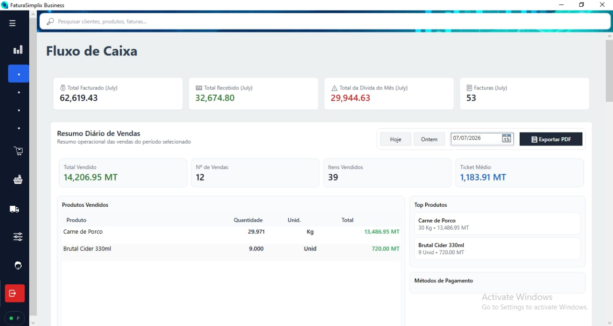
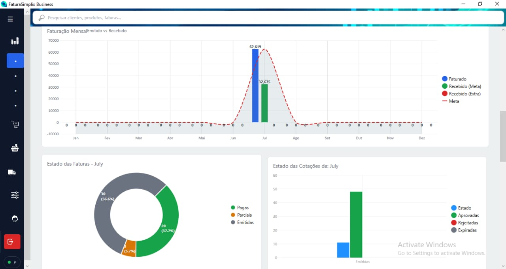
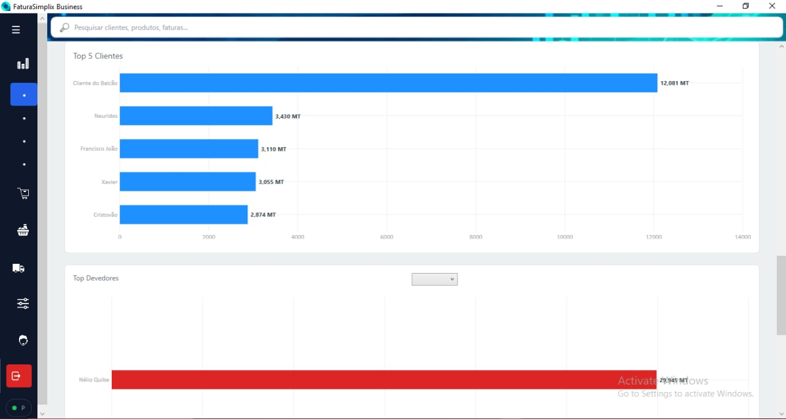
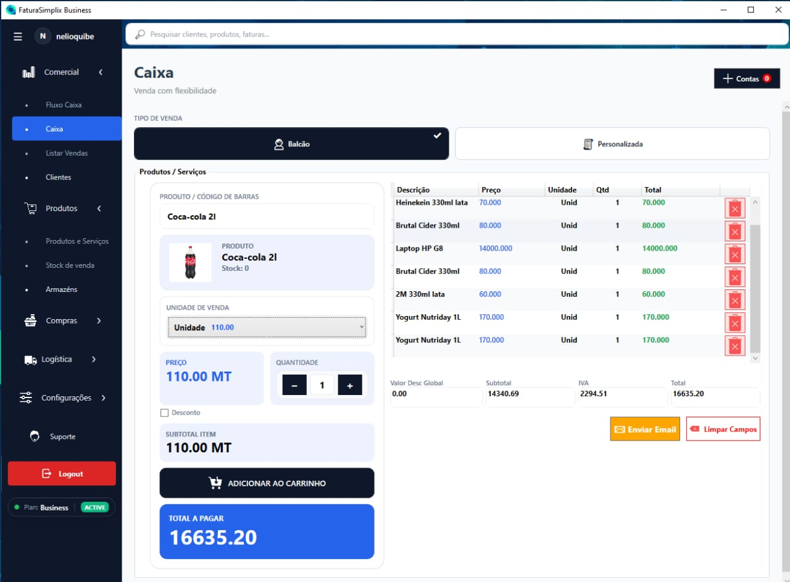
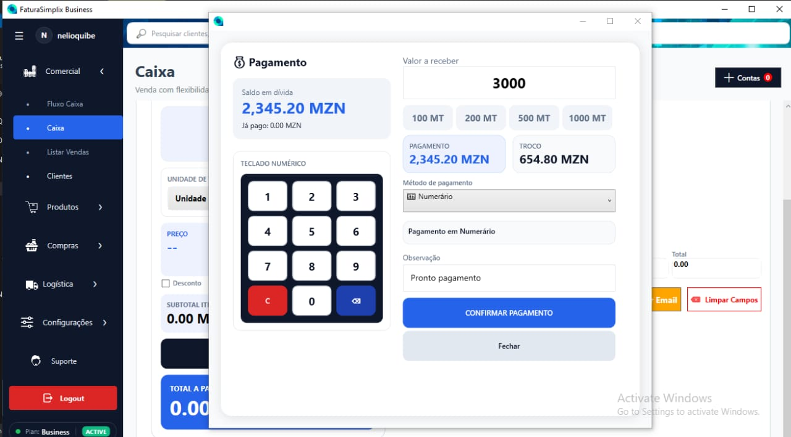
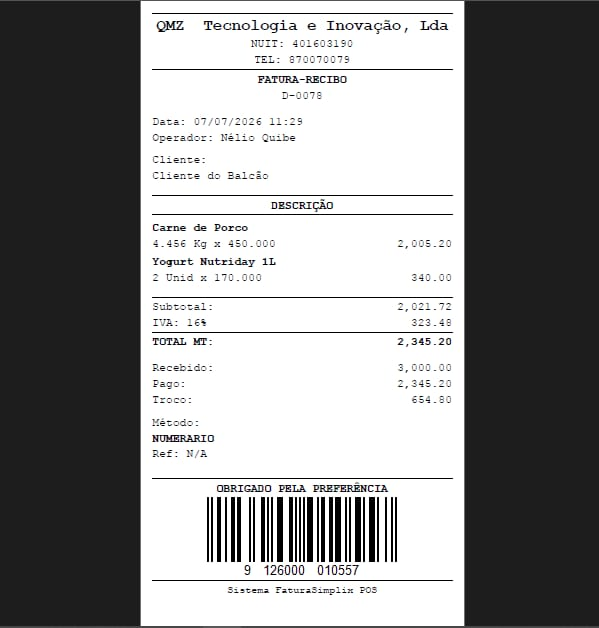
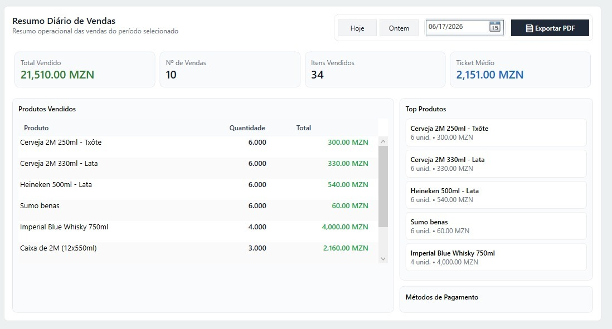
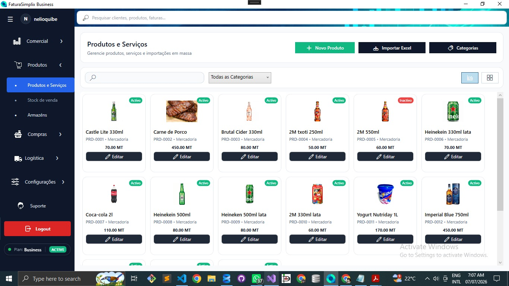
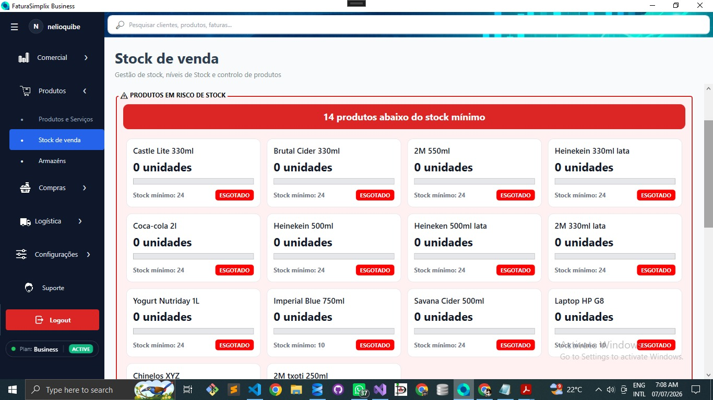

ERP DESKTOP · QMZ TECNOLOGIA E INOVAÇÃO, LDA
FaturaSimplix Business
ERP desktop para gestão comercial e financeira, com controlo do ciclo de facturação, auditoria, mecanismos de integridade fiscal, licenciamento e apoio à gestão empresarial.

Sobre o projecto
O FaturaSimplix Business é um ERP desktop de gestão comercial e financeira desenvolvido no contexto da QMZ Tecnologia e Inovação, LDA.
A solução foi concebida para apoiar empresas na gestão integrada das suas operações comerciais, desde a elaboração de cotações até à emissão de documentos fiscais, pagamentos, recibos, notas de crédito, notas de débito e relatórios.
O sistema procura combinar automatização de processos, controlo de operações, rastreabilidade, segurança de dados e mecanismos de apoio à conformidade fiscal.
Fluxo comercial principal
↓
Aprovação
↓
Factura
↓
Pagamento
↓
Recibo
↓
Notas de Crédito / Débito e Relatórios
Uma regra importante do fluxo é que a emissão de uma factura depende de uma cotação previamente aprovada.
Problemas abordados
O sistema foi desenvolvido para responder a desafios comuns na gestão comercial e financeira, tais como:
- Erros em cálculos e operações financeiras.
- Falta de rastreabilidade das operações.
- Dificuldade de controlo do ciclo comercial.
- Risco de alterações indevidas em documentos fiscais.
- Necessidade de exportação de informação fiscal.
- Falta de controlo sobre utilizadores e permissões.
- Necessidade de mecanismos de backup e recuperação.
Principais módulos e funcionalidades
Gestão comercial
Gestão de empresas, clientes, produtos, serviços e operações comerciais.
Cotações e facturação
Criação de cotações, aprovação, conversão em facturas, controlo de saldos e estados dos documentos.
Pagamentos e recibos
Registo de pagamentos parciais ou totais e emissão de recibos associados.
Notas de crédito e débito
Emissão e gestão de documentos de regularização comercial e financeira.
Devoluções
Módulo destinado ao tratamento de devoluções no contexto das operações comerciais.
Dashboard e indicadores
Indicadores relacionados com facturação, recebimentos, dívidas, conversão e desempenho comercial.
Documentos e exportações
Geração de documentos em PDF e exportação de informação fiscal no formato SAFT/XML.
Backup e recuperação
Operações de backup manual, automático e programado, incluindo mecanismos de armazenamento externo.
Utilizadores e permissões
Gestão de utilizadores, roles, permissões e registos de actividade no sistema.
Licenciamento
Gestão de chaves e validação de licenças através de verificações locais e online.
Contribuições técnicas
A minha participação no FaturaSimplix Business está concentrada na evolução técnica do sistema e na implementação de componentes relacionados com segurança, auditoria, integridade, controlo de acesso e lógica de aplicação.
Embora alguns módulos-base tenham sido inicialmente estruturados por outro colaborador, contribuí de forma substancial para a melhoria e expansão da solução.
Auditoria do sistema
- Concepção inicial do módulo de auditoria na interface WPF.
- Implementação da lógica correspondente no backend.
- Integração de registos em operações críticas.
- Registo de informações como utilizador, acção, data e contexto.
Integridade e imutabilidade fiscal
- Implementação de mecanismos de hash para documentos fiscais.
- Encadeamento de documentos através de referências de integridade.
- Aplicação de mecanismos de assinatura ou hash conforme o fluxo implementado.
- Melhoria dos controlos contra alterações indevidas.
Licenciamento e geração de chaves
- Desenvolvimento do sistema de geração de chaves.
- Validação local das licenças.
- Verificação online de informações de licenciamento.
- Consulta de dados de licença através de ficheiro JSON e serviço remoto.
ViewModels e lógica de aplicação
- Implementação e evolução de ViewModels WPF.
- Organização da lógica de apresentação e interacção.
- Integração entre interface, serviços e operações de persistência.
- Melhoria de fluxos de trabalho em módulos existentes.
Utilizadores, roles e permissões
- Desenvolvimento de componentes de frontend e backend.
- Gestão de utilizadores e perfis de acesso.
- Implementação de permissões e registos de actividade.
- Reforço dos mecanismos de autenticação e segurança.
Outras contribuições
- Desenvolvimento completo do módulo de devoluções.
- Implementação da integração de email.
- Participação na melhoria de cotações, facturas, recibos, NCs e NDs.
- Trabalho relacionado com backups e continuidade operacional.
- Gestão de versionamento e controlo do estado da aplicação através de Git/GitHub.
- Configuração inicial e associação de workstations no contexto do FaturaSimplix.com.
Arquitectura da aplicação
A aplicação segue uma abordagem de arquitectura em camadas, procurando separar a interface, os serviços de aplicação, os modelos de domínio e o acesso aos dados.
WPF + ViewModels
↓
Application Layer
Services
↓
Domain Layer
Models e regras de domínio
↓
Data Layer
Base de dados e helpers
Tecnologias utilizadas
Galeria do projecto









Estado actual
O FaturaSimplix Business encontra-se em desenvolvimento e evolução contínua no contexto da QMZ Tecnologia e Inovação, LDA. O trabalho actual inclui melhorias de arquitectura, segurança, organização interna e preparação de funcionalidades e serviços complementares.